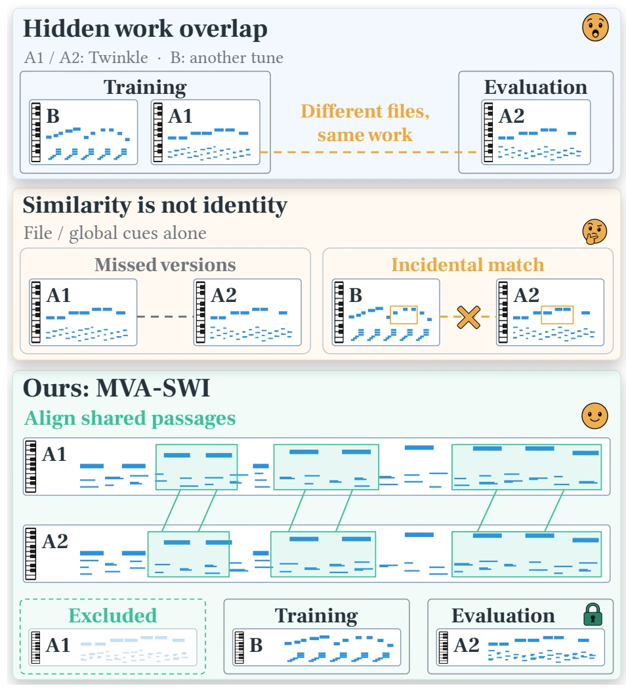
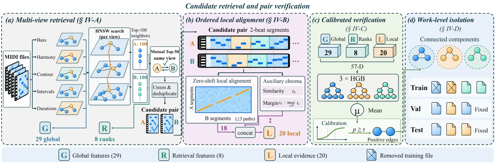
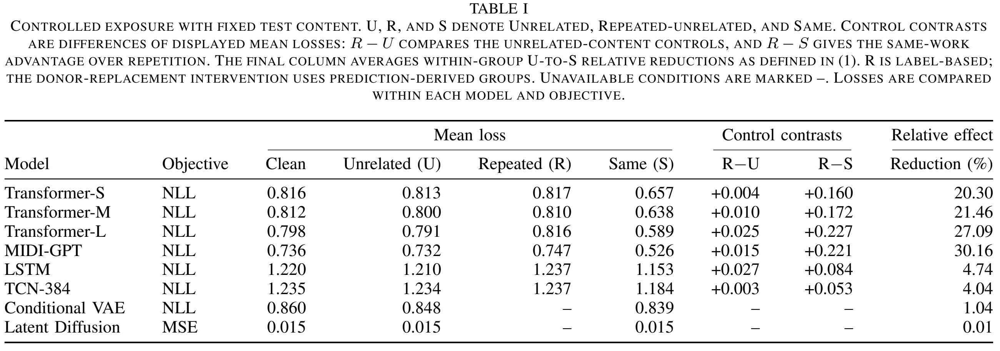
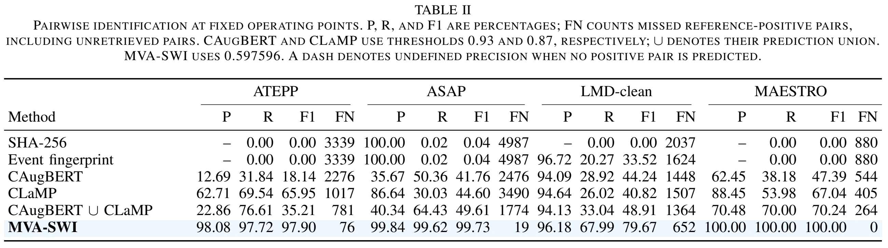
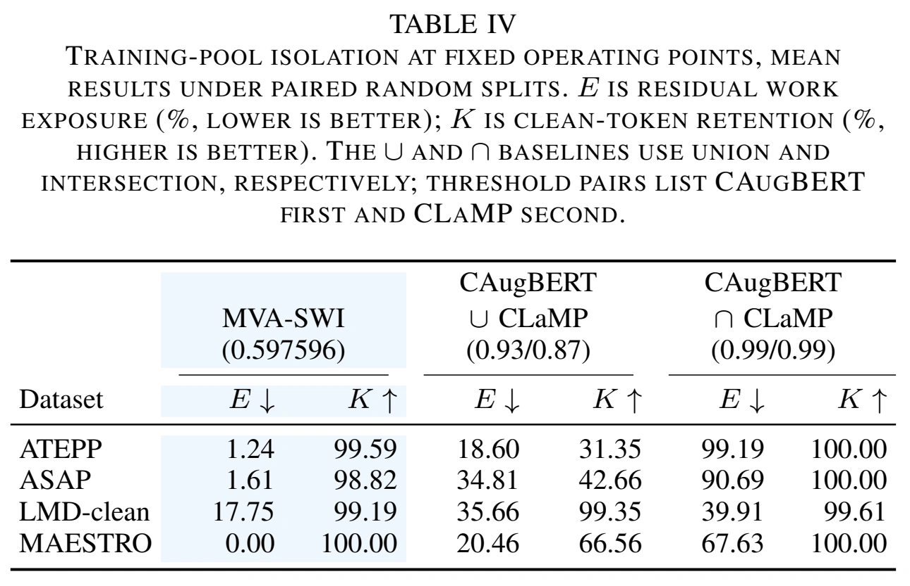
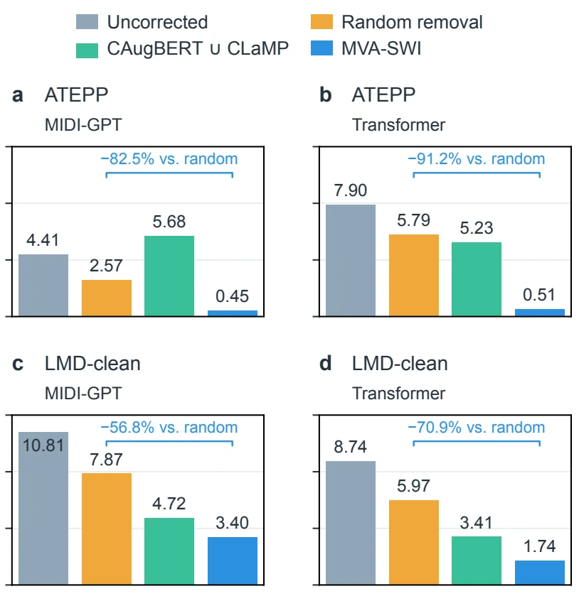
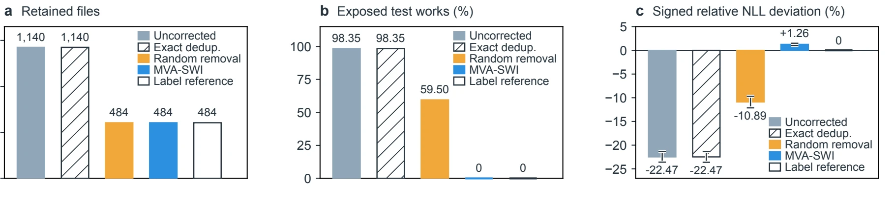

Symbolic music · evaluation · work-level isolation
Beyond File-Level Splits
Rethinking Symbolic Music Evaluation via Multi-View Alignment
Different MIDI files can contain the same musical work. We identify those relations, isolate training content at the work level, and measure how much prior exposure changes evaluation.
Different files. The same work.
A train/test split can be file-disjoint and still expose a model to another performance or arrangement of a test composition.

File identity misses musical identity.
The paper distinguishes a same-work relation between two MIDI files from work-level exposure across the training and evaluation sets. Exposure can make a held-out loss reflect familiarity with the composition.
Isolation removes training files linked to evaluation works while leaving the evaluation set fixed and retaining unrelated music.
Multi-view alignment, then work-level isolation.
MVA-SWI combines retrieval, ordered local correspondence, and calibrated pair verification to form work groups.

Find candidate MIDI pairs with complementary representations.
Compare short segments in order to distinguish a coherent match from incidental similarity.
Combine global, retrieval, and local evidence in a classifier ensemble.
Remove linked training content while keeping validation and test files fixed.
From measured leakage to cleaner evaluation.
Three tables from the paper tell the core story: why work exposure matters, whether the detector recovers same-work pairs, and what happens after isolation.
01. Exposure changes the loss.
Table I from the manuscript. Matched donor conditions keep test content fixed; lower loss under Same indicates a same-work advantage.

02. Identify the hidden relations.
Table II from the manuscript. Fixed operating points; precision, recall, and F1 are percentages.

03. Isolate works, preserve music.
Table IV. Residual test-work exposure E should be low; retention of admissible clean training tokens K should be high.



The goal is evaluation that reflects unseen works, while keeping as much admissible training music as possible.
See the detector in action.
Explore the graphical workflow for reviewing detected same-work groups and listening to MIDI files.
Demo video supplied by the project author · 70 seconds